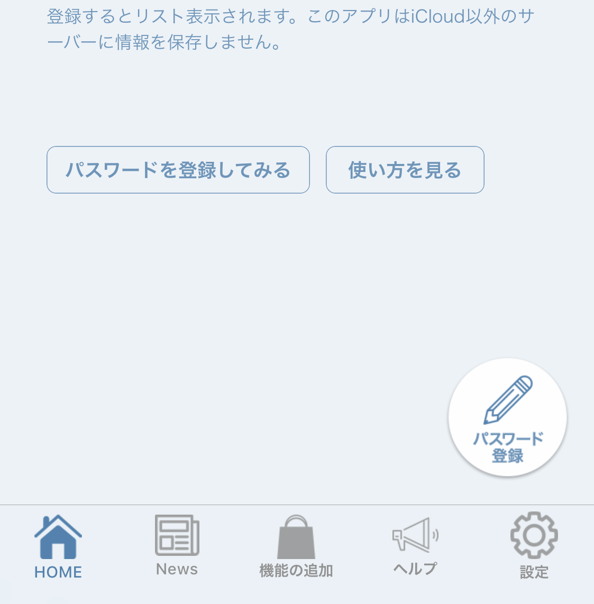
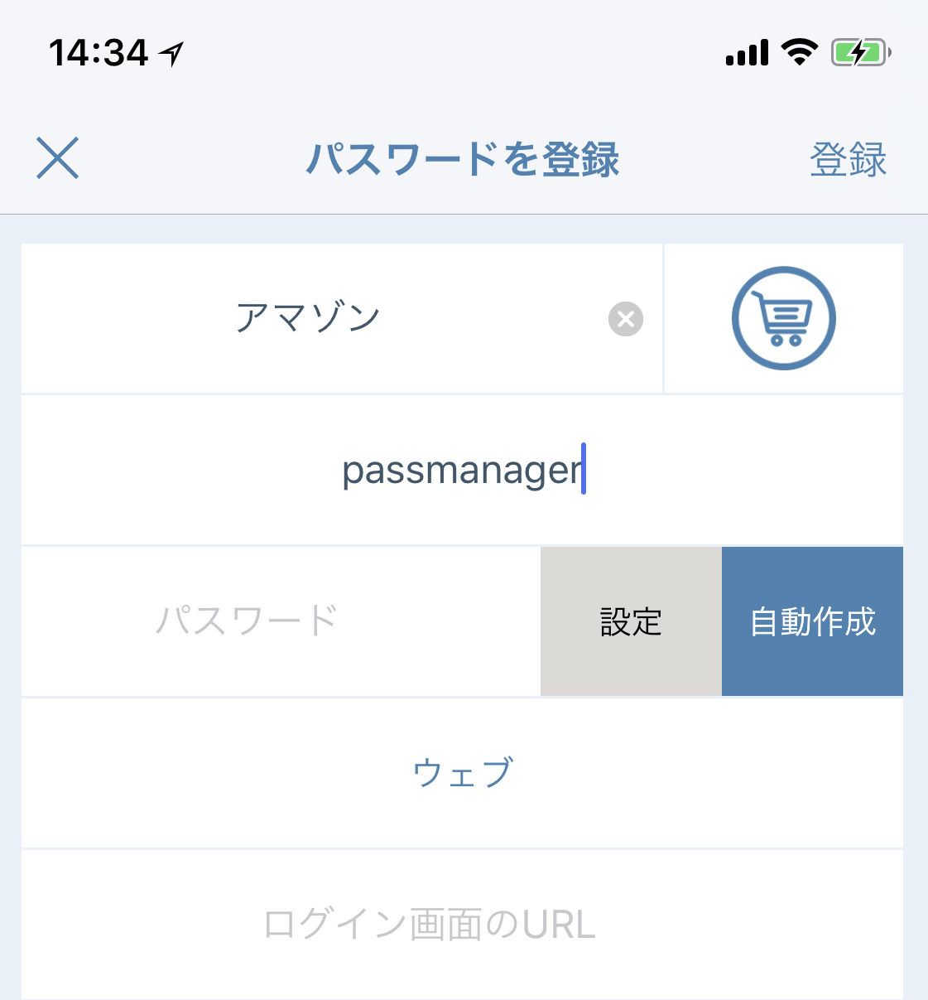
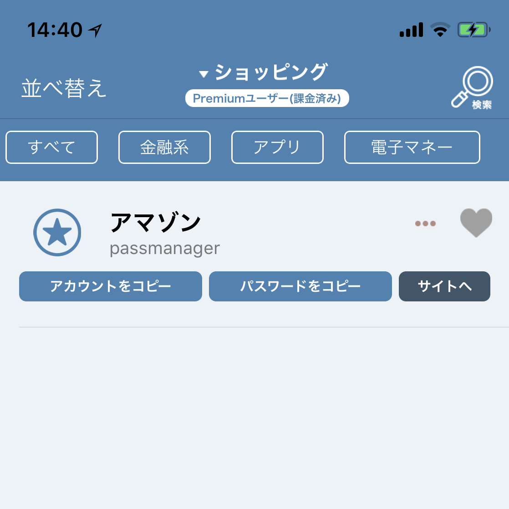
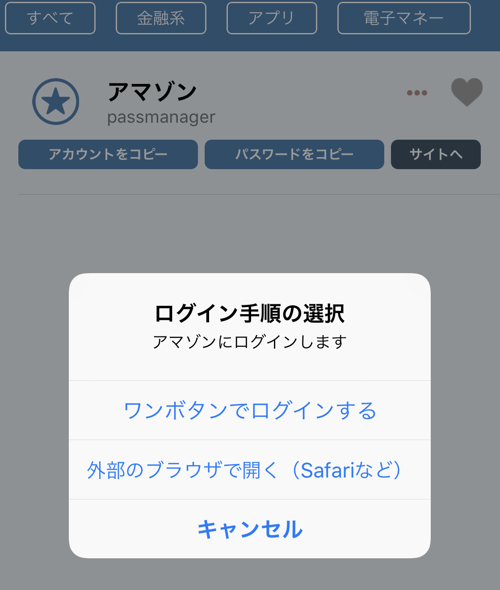

Top画面の右下の「パスワード登録」ボタンを押しましょう

この画面ではパスワードを入力していきます。パスワードの名前、アカウント名、パスワード、アイコン画像を設定します。
パスワードの入力画面（ログイン画面）のURLを入力してください。Safariなどでログイン画面のURLをコピーして入力しましょう

パスワードが正常に登録さていることが確認できます。

登録されたパスワードの「サイトへ」を押すと自動でログインすることができます
よくある質問